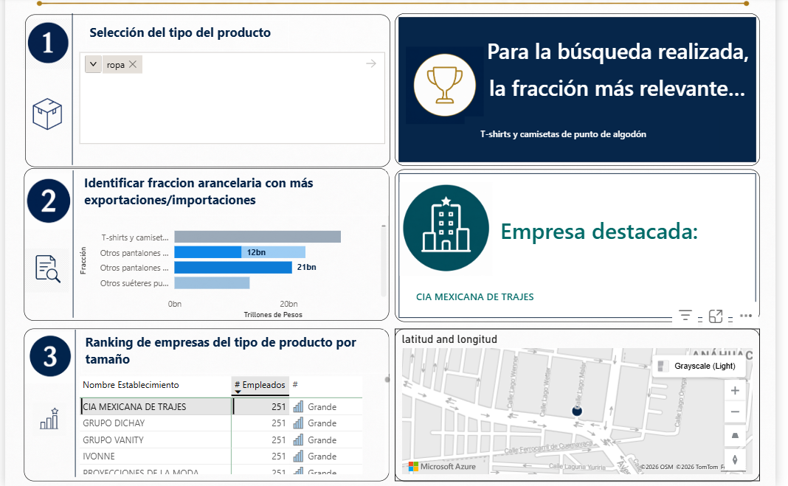

Producto
El usuario busca un tipo de producto, por ejemplo ropa, autopartes o electrónicos.
Power BI · Comercio exterior · Prospección B2B
Dashboard exploratorio para identificar fracciones arancelarias relevantes y posibles empresas relacionadas usando datos públicos.

Resumen ejecutivo
El proyecto organiza información de comercio exterior y establecimientos para ayudar a una agencia aduanal o empresa logística a iniciar una búsqueda más informada de prospectos B2B.
El usuario busca un tipo de producto, por ejemplo ropa, autopartes o electrónicos.
El dashboard identifica fracciones arancelarias con actividad comercial relevante.
Se muestran establecimientos potencialmente relacionados mediante una aproximación sectorial.
Problema de negocio
Una agencia aduanal o empresa logística puede saber que quiere vender servicios a importadores o exportadores, pero no siempre cuenta con un punto de partida claro para decidir qué productos, sectores o empresas investigar.
Este dashboard funciona como una herramienta inicial de inteligencia comercial: permite explorar productos con actividad en comercio exterior y conectarlos con empresas que podrían pertenecer a ramas económicas relacionadas.
Cómo funciona
El usuario escribe un tipo de producto en el buscador del dashboard.
Se identifican fracciones arancelarias con mayor valor o volumen comercial.
La fracción se aproxima a ramas SCIAN o sectores económicos relacionados.
El dashboard muestra ranking de establecimientos y mapa para priorizar investigación.
Fuentes de datos
Datos por fracción arancelaria para identificar productos con actividad de importación o exportación.
Información pública de unidades económicas para ubicar empresas potencialmente relacionadas con el producto analizado.
La relación entre fracción arancelaria y empresa es aproximada. El cruce se realiza mediante rama o sector económico, por lo que no confirma que una empresa venda exactamente esa fracción.
Metodología
El objetivo no es probar una relación exacta empresa-fracción, sino construir una herramienta exploratoria para priorizar búsquedas comerciales.
Búsqueda inicial del usuario.
Ranking por valor, volumen o relevancia.
Relación aproximada con rama SCIAN.
Ranking, empresa destacada y mapa.
Dashboard final
Permite partir de una búsqueda simple, como “ropa”, para filtrar fracciones y empresas relacionadas.
Resume la fracción arancelaria con mayor relevancia dentro de la búsqueda, facilitando una primera lectura del mercado.
Ordena establecimientos potencialmente relacionados por tamaño u otra variable disponible, ayudando a priorizar prospectos.
Muestra la localización del establecimiento seleccionado para apoyar una lectura territorial de la oportunidad comercial.
Valor para negocio
Identifica productos con actividad comercial relevante antes de buscar prospectos.
Ayuda a conectar productos con ramas económicas relacionadas.
Construye una base exploratoria de empresas para investigación comercial.
Sirve como punto de partida para estrategias comerciales aduanales o logísticas.
Limitaciones
La herramienta debe interpretarse como un filtro inicial de análisis. El cruce con empresas se basa en aproximaciones sectoriales, por lo que no demuestra que un establecimiento importe, exporte o venda una fracción arancelaria específica.
Su mayor valor está en reducir el universo inicial de búsqueda y convertir datos públicos dispersos en una ruta práctica para investigación comercial.
Conclusión
Radar Comercial Aduanal muestra cómo Power BI puede transformar datos públicos de comercio exterior y establecimientos en una herramienta exploratoria para detectar oportunidades B2B en servicios aduanales o logísticos.
Volver al inicio